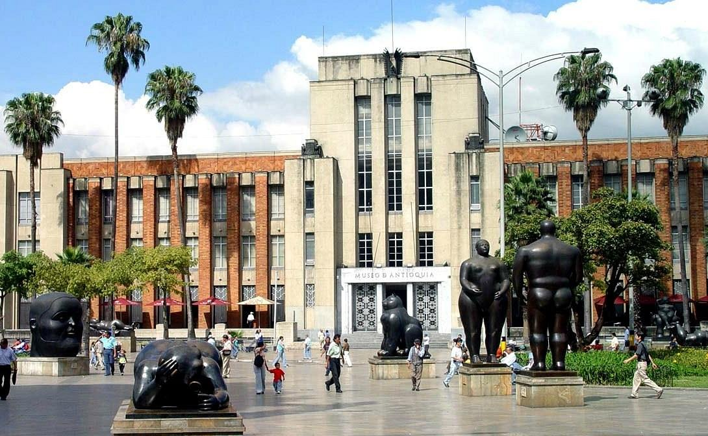
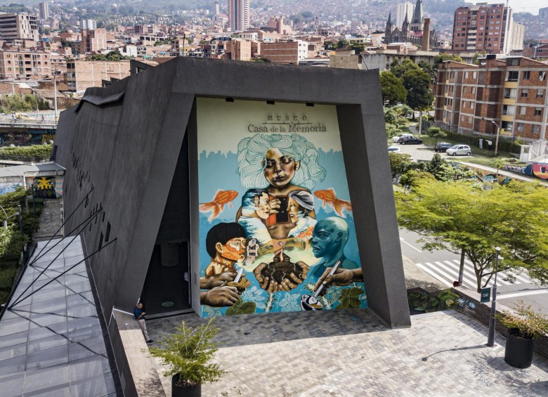

Nuestros Museos
Los museos de historia natural y ciencia desempeñan un papel importante en la concienciación ambiental y la conservación de la biodiversidad.
A través de exhibiciones y programas educativos, promueven la comprensión de los desafíos ambientales y la importancia de la sostenibilidad.En resumen,
los museos son instituciones vitales que enriquecen la vida de las personas, contribuyen a la educación
y la preservación de la cultura, fomentan el entendimiento y la colaboración entre las comunidades, y promueven
el avance del conocimiento en diversas disciplinas. Son tesoros de la humanidad
que merecen ser apreciados y respaldados en beneficio de las generaciones presentes y futuras.
Museo de Antioquia

El Museo de Antioquia cuenta con más de 5.000 piezas: pinturas, dibujos, esculturas y textos que
reúnen diferentes expresiones artísticas de la región y el país, además de objetos de gran valor
histórico como armas, bienes personales, documentos, cerámicas, piezas de orfebrería indígena,
textiles; entre otros.
De igual manera, tiene obras permanentes de grandes artistas antioqueños como Eladio Vélez,
Franciso Antonio Cano, Débora Arango y Pedro Nel Gómez, quien realizó 11 murales que tiempo
atrás decoraron el Palacio Municipal y hoy son un gran atractivo del Museo.
Museo Pablo Escobar

En esta Casa Museo podrá encontrar un acercamiento a la Historia de La Familia Escobar Gaviria,
obtener respuesta a todas tus preguntas acerca de la vida de estos Míticos personajes. Montarte y tomarte
cuantas fotos quieras en sus Carros y Motos. Conocer la Moto de James Bond.
Entre muchas Historias que te sumergirán en el mundo que ellos vivieron.
Planetario de Medellin

El Planetario de Medellín Jesús Emilio Ramírez González ofrece a sus visitantes un escenario
a la altura de los más modernos del mundo, con un domo digital para experiencias de inmersión de alta calidad.
Trocamos la mirada de los planetarios tradicionales hacia las ciencias del espacio, e incorporamos las ciencias
de la tierra para observar,
entre el pasmo y la esperanza, nuestro desconocido planeta.
Museo casa de la Memoria

El Museo Casa de la Memoria se gesta desde las iniciativas y resistencias de las víctimas del conflicto
armado colombiano, quienes, a través de ejercicios de construcción colectiva de memorias y de reparación simbólica,
buscaron una Casa para el diálogo abierto y plural, crítico y reflexivo,
que contribuyera a la superación del conflicto y las violencias en Medellín, Antioquia y el país.
Conoce Más
Museo del Agua
El Museo del Agua es un espacio interactivo y educativo en el que puedes conocer todo sobre el recurso
hídrico, desde su origen en el planeta, detallando su evolución, hasta el entendimiento de su presencia
en los diferentes ecosistemas;
aquí podrás divertirte mientras conoces sus estados y propiedades físicas,
Museo de Arte Moderno de Medellín
El Museo de Arte Moderno de Medellín o MAMM es un museo localizado en Medellín,
dedicado a la investigación, conservación y divulgación en los campos del arte moderno y contemporáneo,
así como al desarrollo cultural de la ciudad. Fue fundado en 1978.
Lista de los principales museos antioqueños
Una lista parcialmente completa de museos departamentales ofrece una idea del patrimonio de Antioquia en cuanto a su memoria cultural histórica:
Museo Antropológico de la Diócesis de Apartadó
Museo Comunitario de Guatapé, municipio de Guatapé
Museo Histórico y Arqueológico de Marinilla, municipio de Marinilla
Museo de Arte Religioso y Panteón de los Hijos de La Ceja, municipio de La Ceja
Museo de las Hermanas Franciscanas, municipio de Granada
Museo Arqueológico – Casa de la Cultura Pedro Justo Berrío, municipio de Puerto Berrío
Museo de arte religioso "Tiberio de J. Salazar y Herrera", municipio de Sonsón
Museo Folclórico la Casa de los Abuelos, municipio de Sonsón
Abelardo Jaramillo, municipio de Entrerríos
Museo Histórico de Entrerríos, municipio de Entrerríos
Museo Clara Rojas, municipio de Jardín
Museo Casa de la Cultura, municipio de Jardín
Museo Colonial Juan del Corral, municipio de Santa Fe de Antioquia
Museo de Arte religioso Francisco Cristóbal Toro, municipio de Santa Fe de Antioquia
Museo de Arte Religioso de Jericó, municipio de Jericó
Museo Arqueológico del Suroeste (Masur), municipio de Jericó
Museo de Arte Religioso de la Catedral de San Nicolás, municipio de Rionegro
Museo Histórico Casa de la Convención de Rionegro
Museo de Artes y Tradiciones de Pueblorrico – Casa de la Cultura Joaquín López Gaviria, municipio de Pueblorrico
Museo de arte Religioso de El Retiro, municipio de El Retiro
Museo del Fundador y Sala-Museo Histórico de la Comunidad Hijas de Nuestra Señora de las Misericordias, municipio de Santa Rosa de Osos
Museo Etnográfico – Casa Misionera de las Hermanas Teresitas, municipio de Santa Rosa de Osos
Museo Cultural Porfirio Barba Jacob, municipio de Santa Rosa de Osos
Museo Diocesano Monseñor Miguel Ángel Builes, municipio de Santa Rosa de Osos
Museo Museo Histórico de El Peñol, municipio de El Peñol
Museo Histórico Parroquial Presbítero Eufrasio Rojas, municipio de Ciudad Bolívar
Museo Mauricio Cuervo – Casa de la Cultura Cristóbal Patiño Osorio, municipio de Montebello
Museo del Hombre del Darién, municipio de Turbo
Museo Municipal de Historia y Asentamientos Indígenas de Necoclí
Museo General José María Córdova, municipio de El Santuario
Museo Artístico Guillermo Zuluaga “Montecristo”, municipio de El Santuario
Museo Tradicional Monseñor Juan N. Rueda, municipio de Yarumal
Museo Casa de la Cultura Doctor Miguel María Calle, municipio de Abejorral
Museo Antropológico de la Diócesis de Apartadó, municipio de San Pedro de Urabá
Museo El Castillo Diego Echavarría, municipio de Medellín
Museo de Arte Moderno, municipio de Medellín
Museo Etnográfico Madre Laura, municipio de Medellín
Museo Etnográfico Miguel Ángel Builes, municipio de Medellín
Museo Histórico de Antioquia, municipio de Medellín
Museo Teatro Prado del Águila Descalza, municipio de Medellín
Museo Planetario de Medellín, municipio de Medellín
Casa Museo Maestro Pedro Nel Gómez, municipio de Medellín
Museo Pueblito Paisa y Parque de las Esculturas, municipio de Medellín
Casa Museo Fernando González “Otraparte", municipio de Envigado
Casa de la Cabuya, municipio de Guarne
Casa Museo de José María Córdova, municipio de Concepción
Casa Museo Santafé, dentro del zoológico, Municipio de Medellín
Casa Museo Betania, municipio de Betania
Casa Museo Municipal de San Rafael, municipio de San Rafael
Casa Museo Hotel Magdalena, Décima Cuarta Brigada, municipio de Puerto Berrío
Casa Museo y Pueblito Paisa de la Hacienda Fizebad, municipio de El Retiro
👆Subir al Inicio👆